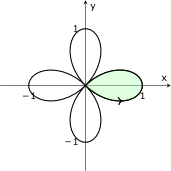
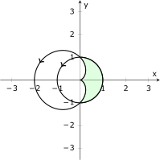
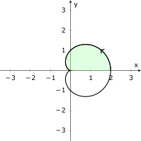

MATH 1336: Calculus III
Section 1.4: Area & Arclength in Polar Coordinates
Integral Calculus in Polar Coordinates:
Area:
The area enclosed by a polar curve from
to can
be calculated using:
The key idea behind this formula is to break up the area into small sectors of circles, then add them up!
Arclength:
The arclength of polar curve from
to can
be calculated using:
The key idea behind this formula is to break the curve up into small line segments, then add up the lengths of
the line segments. Alternatively, it can be derived from the parametric arclength formula by using
, and the
product rule.
Sectors of Circles:
The derivations of the formulas above rely on geometric arguments involving the
formulas for the area and length of an arc of a circular sector. For a circle of radius
and a sector with
interior angle :
If you are interested, you can see the lecture notes for more details!
In-class Problems:
-
1.
- Example 2 from 1.4 Lecture Notes
Consider the four-leaved rose, which is described by the polar equation shown below.

-
(a)
- Set up and evaluate a definite integral to calculate the shaded area of one “petal” of the four-leaved
rose, which is generated by
-
(b)
- Set up BUT DO NOT EVALUATE a definite integral to calculate the length of the curve surrounding
the shaded area.
-
2.
- Example 3 from 1.4 Lecture Notes
Find the area inside the circle
and outside the cardioid .

-
(a)
- Find the values of
where the curves intersect.
-
(b)
- Use your answers from the previous part to help you set up a definite integral to calculate the shaded
area.
-
(c)
- Evaluate the integral you set up to calculate the shaded area.
-
(d)
- Does the value you calculated for the area seem reasonable? Why or why not?
-
3.
- Consider the curve described by the following polar equation, which is graphed on the axes below.

-
(a)
- Set up and evaluate a definite integral to calculate the shaded area.
-
(b)
- Use symmetry to calculate the entire enclosed area. Does your answer seem reasonable? Why or why
not?
-
(c)
- Set up BUT DO NOT EVALUATE a definite integral to calculate the length of the curve above the
shaded area.
-
4.
- Find the area of the region that is bounded by the given curve, and lies in the specified sector:
-
5.
- Find the exact length of the polar curve: